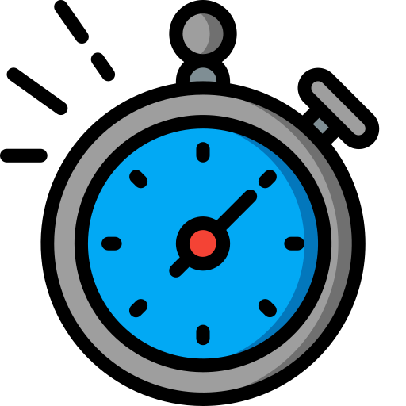
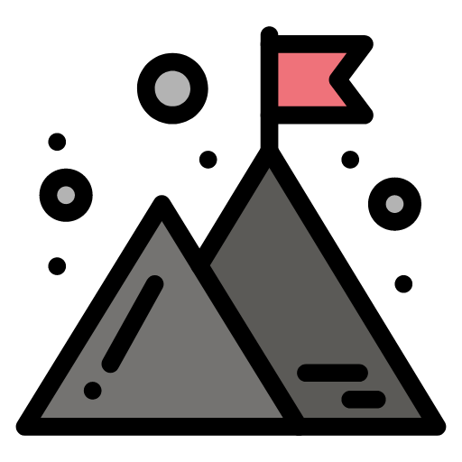

Treningsplan¶
Forslag til treningsplan for barn i alderen 10-14 år. Denne planen er laget for å gi en oversikt over hva som kan gjøres i løpet av treningsøktene. Den brukes som en mal og kan tilpasses etter behov og spillernes ferdighetsnivå. Om de faste trenerene ikke er tilgjengelig, kan vikar trenere bruke denne planen som en guide.
Informasjon til de involvert
Punktene under er laget med tanke på å skape et trygt, produktivt og motiverende miljø som bidrar til både individuell og kollektiv utvikling.
For å sikre en god treningsøkt og et positivt miljø, er det viktig at spillerne har et klart fokus under treningene. Følgende punkter gjelder:
-
Snakk hverandre opp:
- Spillere skal gi hverandre positiv feedback og oppmuntring under øvelser og spill.
- Unngå negative kommentarer – støtt lagkameratene, selv i situasjoner der ting ikke går som planlagt.
-
Følg trenerens instruksjoner:
- Spillere skal lytte til og utføre trenerens veiledning uten unødvendig diskusjon eller kverulering.
- Eventuelle spørsmål kan tas på en respektfull måte når det passer.
-
Respekter tiden til medspillere og trenere:
- Hold fokus på treningen – unødvendig surr, tull og diskusjoner vil føre til mindre tid til øvelser og spill.
- Alle er her for å lære og utvikle seg, og det er viktig å bruke tiden effektivt.
- Ta korte pauser underveis for vann og gi tid til instruksjoner.
- Sørg for jevn progresjon i intensitet gjennom økten.
- Tilpass øvelsene etter spillernes ferdighetsnivå.
- Gi hyppige tilbakemeldinger, spesielt på teknikk og samspill.
- Prøv alltid å finne noe man kan rose spillerne for.
Oppvarming¶
Øvelsene er inspirert av skadefri.no, og Preben "Legenden" Rønningen, som anbefales for fotballspillere på alle nivåer. For mer informasjon, se: Skadefri Fotball.
- Hold intensiteten moderat til høy, men fokus på teknisk riktig utførelse.
- Bygg inn progresjon i intensitet etter hvert som oppvarmingen skrider frem.
- Oppmuntre til selvstendighet ved at spillerne lærer oppvarmingsrutinen godt og bytter på å velge øvelser.
 Varighet:
10 minutter
Formål:
Forebygge skader og forberede spillerne på trening/kamp. Øvelsene er faste og kan gjennomføres av spillerne på egenhånd uten veiledning fra trenerne.
 Gjennomføring:
Gjennomføring:
Tips
Kryss av på hver øvelse under for å holde oversikt over hva som er gjort.
Det er lurt å lære spillerene en fast rekkefølge. Det vil da være lettere å huske hva som er gjort og hva som gjenstår når de skal varme opp på egenhånd.
- Rolig jogg. (1)
- Høye knær.
- Spark bak. (2)
- Sideveis løp mot hverandre.
- Sideveis løp fra hverandre.
- Symaskin. (3)
- Offensiv posisjon. (4)
- Defensiv posisjon. (5)
- Skudd med annenhver fot.
- Skudd bakover. (6)
- Hopp med høye knær. (7)
- Bein inn-til-ut. (8)
- Bein ut-til-inn. (9)
- Hopp med heading. (10)
- Parøvelse: Skulder mot skulder. (11)
- Trippe på stedet. (12) - reaksjon på fløytesignal for sprint:
- Fremover.
- Med kroppen vendt mot høyre.
- Med kroppen vendt mot venstre.
- Bakover.
- Ca 10 ganger frem og tilbake
- Hælene til baken
- Hurtige små sikk-sakk steg på stedet
- Lavt tyngdepunkt, fremover
- Lavt tyngdepunkt, bakover
- Harry Kane
- Jente hopp
- Sirkler med hoftebevegelse
- Sirkler med hoftebevegelse
- Imaginær ball
- Små hopp med støt
- Hurtige små steg
Deløvelser¶
Noen av øvelsene er delt, disse bytter vi på litt vilkårlig fra gang til gang. Keeper øvelser gjøres pralellt i egen gruppe og ofte, men ikke hver gang.
Eksplosivitet / Styrke¶
Fokus på rask utførelse og kontroll. Alternér øvelsene for å utfordre ulike muskelgrupper.
Varighet:
10 minutter
Formål:
Øke spillerens eksplosivitet, styrke og utholdenhet.
Gjennomføring:
Varier mellom øvelser som:
Inkluderer sprint, kroppsvektøvelser, som push-ups, sit-ups, spensthopp, planke, froskehopp, osv.
Stasjoner som fokuserer på eksplosivitet og utholdenhet (Navn og beskrivelse må defineres mere detaljert).
Firkantøvelse¶
Fokus på rask beslutningstaking, utførelse og presisjon.
Varighet:
5 minutter
Formål:
Forbedre spillerens tekniske ferdigheter og evne til å utføre under press.
Gjennomføring:
Varier mellom øvelser som:
Spillere plassert i en firkant, med en spiller i midten. Denne spilleren skal prøve å vinne ballen fra de andre spillerne. Bytt på hvem som er i midten.
Spillere plassert i en firkant, med porter plassert på hver side. Spilleren med ball må passere gjennom porten for å få «poeng». Det er alltid 1 port mer enn "forsvarende" spiller. Bytt på hvem som er i midten.
Possession¶
Fokus på raske bevegelser og kombinasjoner.
Varighet:
10 minutter
Formål:
Forbedre spillerens evne til å holde på ballen og skape sjanser.
Gjennomføring:
Spillere deles inn i lag på en liten avgrenset bane med midtlinje. Laget som skal vinne ball kan kun sende 2 spillere over midtlinjen. Angripende lag får poeng ved å vinne ball og sende denne over til egen sone. Forsvarende lag får poeng ved å holde på ballen i 5 pasninger.
Keeperøvelser¶
Tips til:
Øvelsene bør gjøres med progresjon, der vanskelighetsgraden øker etter hvert som keeperen mestrer de grunnleggende momentene.
- Hold blikket på ballen gjennom hele bevegelsen.
- Sett raskt føttene i posisjon før redningen.
- Sørg for kontrollert grep eller retur til trygge områder.
- Bestem deg raskt om du skal gå for ballen.
- Hvis du bokser ballen, sørg for at den går til en trygg sone.
- Kommuniser tydelig med forsvaret («Ut!», «Min!»).
- Beveglse i bue mellom stolpene.
- Beveg deg fremover for å redusere "størrelsen" på målet.
- Gi konkrete og umiddelbare tilbakemeldinger på teknikk og valg.
- Oppmuntre til kommunikasjon og selvsikkerhet.
- Variér intensiteten basert på keeperens ferdighetsnivå.
Varighet:
10 minutter
Formål:
Styrke keepernes grunnleggende ferdigheter, reaksjonsevne og posisjonering.
Gjennomføring:
Øvelse 1: Reaksjon og redninger på kort hold.
- Utstyr: Kjegler og et godt antall baller.
- Oppstilling: Keeper i mål. Skyttere (trenere eller spillere) står ca. 5-7 meter unna.
- Skyttere avslutter på mål med varierte skudd: lavt, høyt, venstre og høyre side.
- Keeper skal fokusere på rask reaksjon, korrekt posisjonering og sikre redninger.
- Variasjon: Kast ballen i stedet for å skyte for å simulere andre typer situasjoner.
Øvelse 2: Flere øvelser kommer ved anledning til å skrive dem ned.
Hoveddel¶
Vi vil variere mellom defensiv og offensiv trening, og hvilke av øvelsene vi velger vil variere fra gang til gang.
Fokus på organisering, kommunikasjon og gjenvinning av ball.
Varighet:
15 minutter
Formål:
Forbedre spillerens evne til å forsvare og angripe som et lag.
Gjennomføring:
Variér mellom øvelser som:
Undertallsforsvar
- Spill med forsvarende undertall for å trene på defensiv organisering og press i undertallssituasjoner.
- Fokus på kommunikasjon og forsvarsspill med godt bruk av rom, press og overganger.
Tre-lags overgangsspill
- Sett opp en bane, ca.40x30m, med to småmål på ene siden og et stort på den andre (helst med keeper). Banen deles inn i tre soner.
- Tre lag (to lag spiller, ett lag forsvarer).
- Øvelsen starter med angrepslag i midtsonen, som angriper småmålene og et forsvarende lag i sonen
- Scorer angrepslaget, får de ny ball i midtsonen, og angriper motsatt side og stort mål
- Vinner forsvarende lag, angriper de lag og mål på motsatt side

Variér mellom øvelser som:
Undertallsangrep
- Spill med angripende undertall for å trene på offensiv organisering og press i undertallssituasjoner.
- Fokus på kommunikasjon og angrepsspill med godt bruk av rom, passeringer og avslutninger.
Caro - Innlegg og avslutning i boks
- Organiser en bane mot ett stort mål med keeper, og to småmål i motsatt ende. Størrelse på banen er avhengig av alder og ferdigheter
- Lag friområder i hver korridor, hvor angriper kan få legge innlegg uten press
- Trener starter øvelsen hvor tre angrepsspillere skal angripe i boks mot tre forsvarere og keeper. Angrepet skal gå via korridor/friområde og innlegg i boksen
- Vinner forsvarende lag ballen, kan de forsøke å score på småmål eller sette ballen ut av spill

Spill¶
Fokus på lagarbeid og samspill.
Varighet:
30 minutter
Formål:
Forbedre spillerens evne til å bruke tekniske ferdigheter, taktiske kunnskaper i kamp, og kommunikasjon med lagkamerater i en kamp situasjon.
Gjennomføring:
- Spill på egnet banestørrelse (f.eks. 5v5 eller 7v7) alt etter som oppmøtte spillere.
- Fokus på lagarbeid med og uten ball.
- Blås for å stoppe spillet hyppige med tilbakemeldinger på teknikk, taktikk og samspill.
- Varier posisjoner og fordelinger av lagene for å utfordre spillerne.
Avslutning¶
Fokus på presisjon og kraft i avslutningene.
Varighet:
10 minutter
Formål:
Forbedre spillerens evne til å avslutte presist og kraftfullt.
Gjennomføring:
- Spillere tar straffespark mot keeper (rotér keeper om nødvendig).
- Spiller avslutter på målets nett, først med kort avstand. Avstanden økes gradvis etter progresjon i aktiviteten.